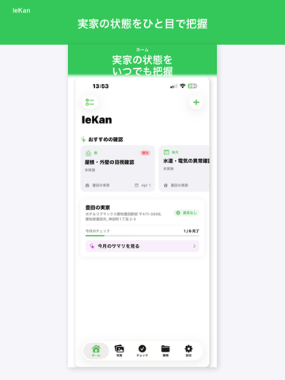
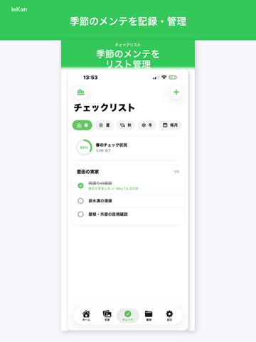
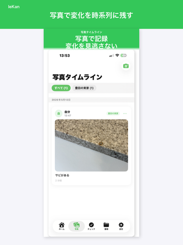

離れて暮らす家族のために、実家の状態をいつでも、
どこからでも確認できます。写真・点検・書類を一箇所に。
iOS 17以降対応 · iCloudサインイン必要 · 無料で始められます



家族が現地の様子を投稿。撮影した写真を時系列で記録し、過去と現在を見比べて変化を把握できます。
台風前の屋根点検、冬の凍結対策など、季節ごとのメンテナンスをリマインダー付きで管理。
保険証券・税通知書・修繕記録をスキャン。OCRで期限を自動読み取り、更新忘れを防ぎます。
iCloudで安全に同期。招待コードを共有するだけで、家族全員でリアルタイムに情報を共有できます。
撮影した写真は日付順に整理して保存。気になる写真を2枚選んで並べて比較できます。 屋根のひび割れ、外壁の汚れ、庭の変化など、時間をかけた変化を記録として残せます。
書類を撮影してカテゴリを選ぶだけで保存完了。「保険」「税金・固定資産」「修繕・リフォーム」「公共料金」の4カテゴリで整理できます。 OCRでテキストを読み取り、期限が近い書類は「まもなく期限切れ」でお知らせ。更新忘れを防ぎます。
季節ごとのメンテナンス項目があらかじめテンプレートとして用意されています。 完了履歴は最大24回分グラフで確認でき、リマインダー通知で点検忘れを防ぎます。
すべてのプランでデータはiCloudに安全に保存されます。
購入はApp Storeを通じて行われ、Appleの利用規約が適用されます。
自動更新サブスクリプションはいつでもキャンセルできます（iPhone「設定」→「Apple ID」→「サブスクリプション」）。